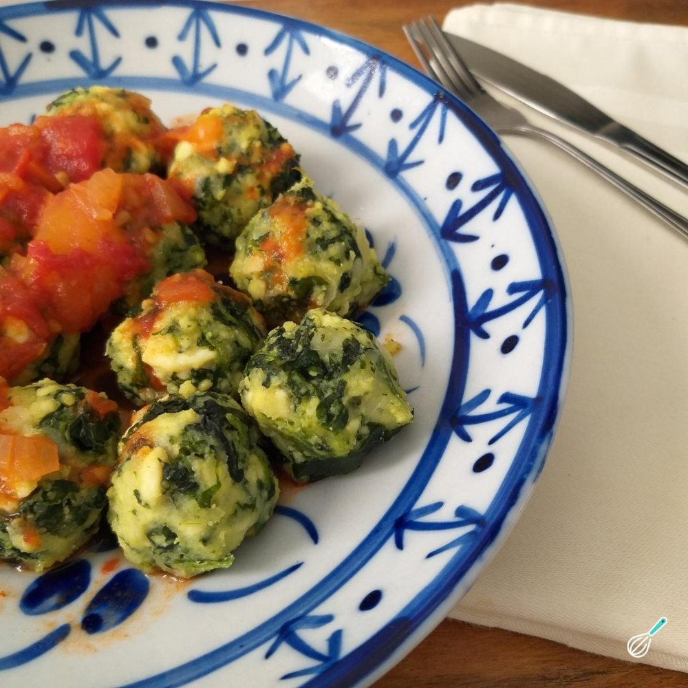

Massas
Nhoque de ricota

Ingredientes
- 300 g de espinafre já cozido
- 600 g de ricota
- 3 ovos
- ½ xícara de parmesão ralado
- ¾ xícara de farinha de trigo
- ½ colher (chá) de noz-moscada ralada
- Sal e pimenta-do-reino a gosto
- Manteiga
Modo de preparo
- Ponha o espinafre sobre uma peneira e aperte para retirar toda a água do cozimento. Pique bem fino e ponha numa tigela.
- Passe a ricota por uma peneira e junte ao espinafre.
- Acrescente os ovos, o parmesão, a farinha de trigo, a noz-moscada, sal e pimenta a gosto. Misture bem para obter uma massa homogênea.
- Pegue a massa com as mãos, vá formando bolinhas pequenas (de 1,5 a 2 cm de diâmetro) e arrumando numa assadeira.
- Coloque uma panela com água e sal para ferver em fogo bem forte e, quando estiver fervendo, vá colocando os nhoques, aos poucos, para cozinhar. Vá retirando os nhoques que subirem à superfície com uma escumadeira e arrumando em embalagens de alumínio. Tempere com um pouco de manteiga, deixe esfriar completamente e congele.
Observação
Se, na hora de enrolar o nhoque, a massa ficar um pouco mole e você tiver dificuldade para enrolá-lo, acrescente um pouco mais de farinha de trigo. Congelamento: embrulhe as embalagens de alumínio em filme plástico ou coloque em um saco plástico que feche hermeticamente; etiquete e congele. Descongelamento: na geladeira de um dia para o outro, ou no micro-ondas, ou no forno em temperatura baixa; cubra com o molho de sua preferência e aqueça. Sirva com parmesão ralado à parte.